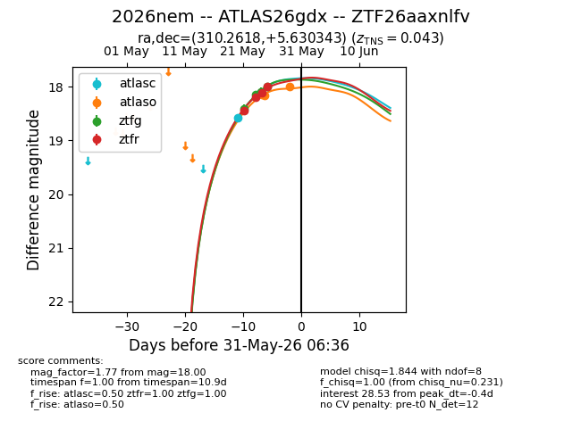
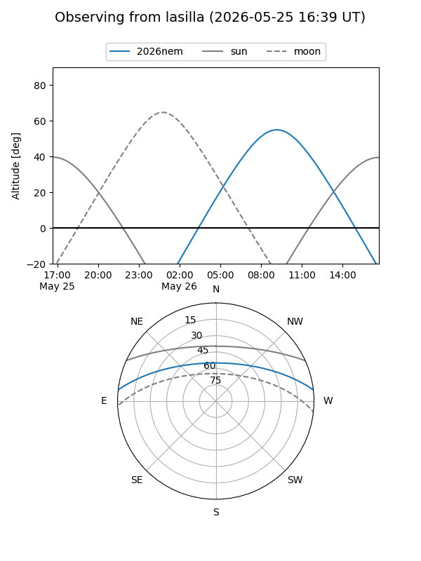
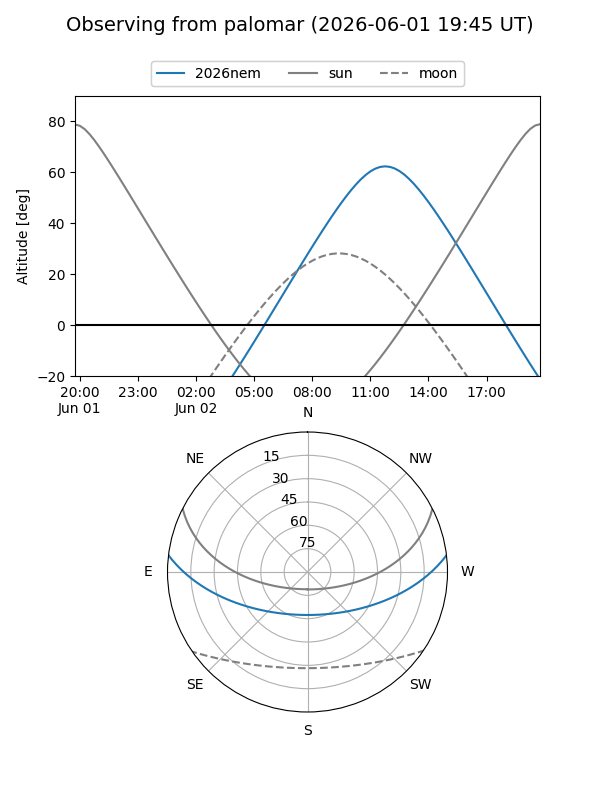
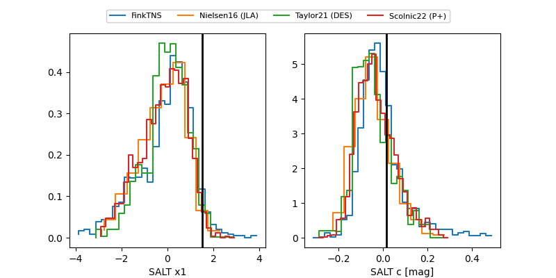

2026nem
Target 2026nem at 2026-05-31 06:37
Aliases and brokers:
lsst-FINK: link
lsst-Lasair: link
lsst-ALeRCE: link
ztf-FINK: link
ztf-Lasair: link
ztf-ALeRCE: link
TNS: link
YSE: link
alt names
ZTF26aaxnlfv (ztf,fink_ztf)
2026nem (tns,yse)
ATLAS26gdx (atlas)
Coordinates:
equatorial (ra, dec) = 310.2618,+5.63034
equatorial (HMS+DMS) = 20:41:02.82,+05:37:49.24
galactic (l, b) = (51.4637,-21.27786)
Flags:
TNS confirmed: SN Ia
TNS redshift: 0.043
confirmed ia: True
Photometry:
last atlasc=18.58, atlaso=18.00, ztfg=18.00, ztfr=18.00
1 atlasc, 3 atlaso, 4 ztfg, 4 ztfr detections
Lightcurve

Visibility


Additional plots
